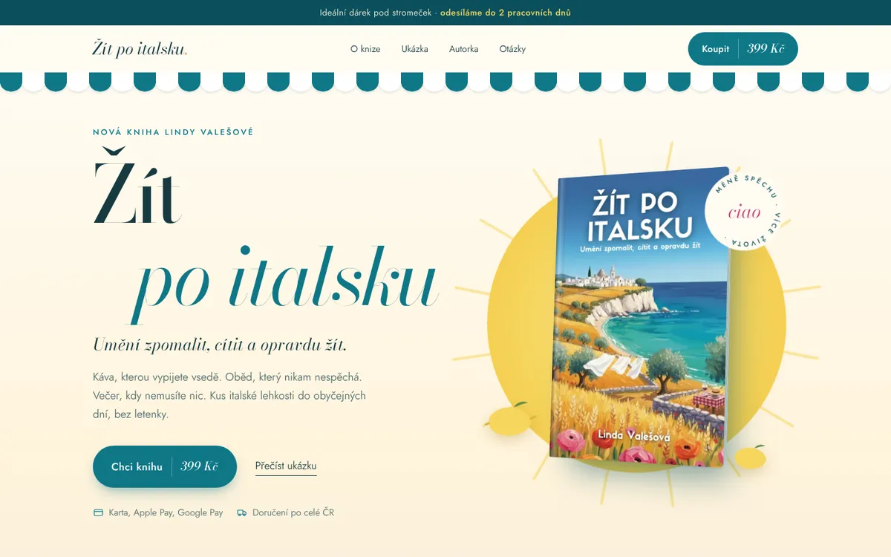
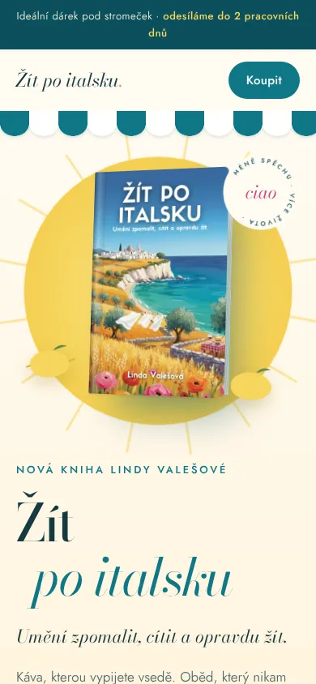

Varianta A
Riviera
Poledne na pobřeží Amalfi. Pruhovaná markýza, slunce a tyrkysové moře. Nejsvěžejší a nejjednodušší.
- Písmo
- Bodoni Moda (kořeny v Parmě) a Jost (geometrie italských cestovních plakátů 50. let)
- Barvy
- Animace
- Kniha se natáčí za kurzorem, za ní dýchá slunce, dole se vlní moře.